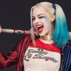

volver al home
Harley Quinn:
Harley Quinn (nombre real Dra. Harleen Frances Quinzel) es un personaje ficticio creado por los estadounidenses Paul Dini y Bruce Timm para la editorial DC Comics. Quinn hizo su debut en el vigésimo-segundo episodio de Batman: la serie animada, «El favor del Joker», en septiembre de 1992 y se convirtió en una villana recurrente en la serie, posee una excelente agilidad y es rápida peleando, solo es superada por Batman y el Joker. Su agilidad se debe a ser una gimnasta y una acróbata.